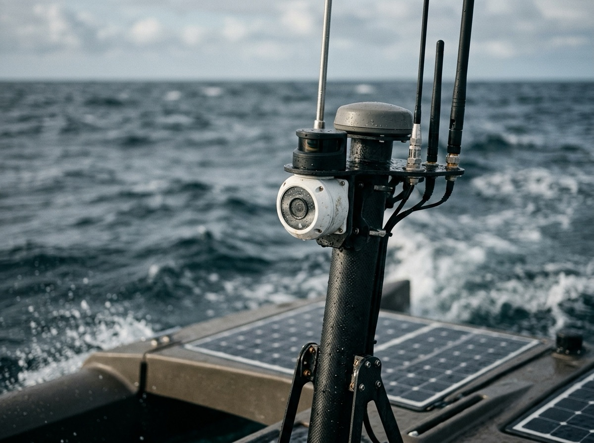
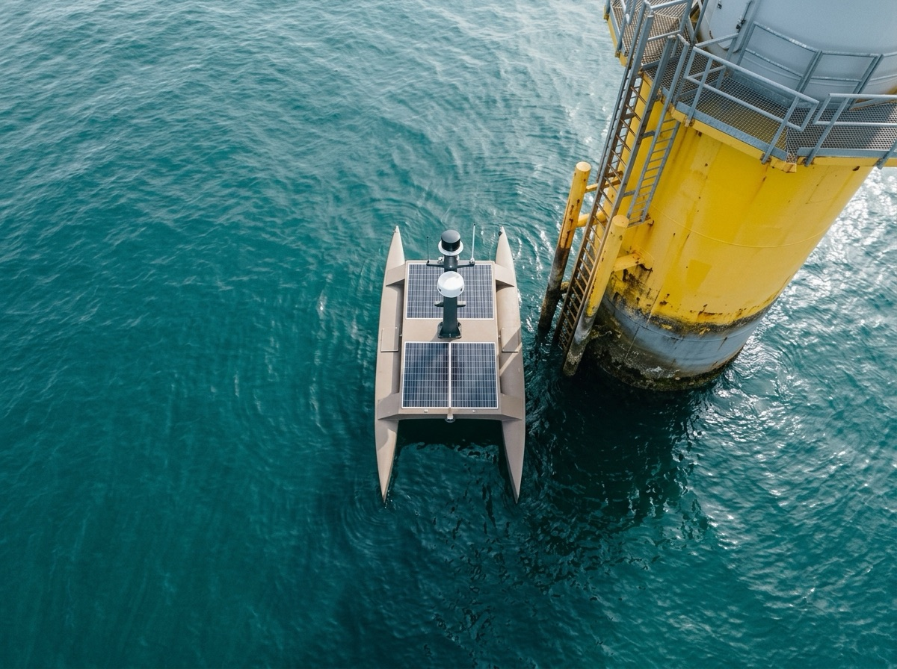

A Tidewright drone leaves the quay on a planned route, works the site with a pilot supervising from shore, and comes home with data your engineers can sign off. It does three things, and does them properly.
01
Survey
Multibeam sonar maps scour, cable burial and seabed change around every structure, to the centimetre.
Scour and seabed change
Cable depth of burial
Quay wall and toe
02
Inspect
Stabilised cameras and lidar read the splash zone, J-tubes, ladders and anodes from a metre away, without a rope access team.
4K visual and thermal
Lidar to 120 m
Cathodic protection probe
03
Report
Findings arrive georeferenced and graded by severity, in your asset system on the same day the drone gets back.
Graded anomaly list
Change since last visit
Exports to your asset system
Foundations inspected
2,140
Hours at sea
38,600h
Crew transfers avoided
1,260
Quay to first data
5.5h

01020304
The mast
Everything looks out from one mast.
01Camera dome 4K visual and radiometric thermal, 30× zoom, gyro-stabilised
02Lidar 120 m range for structure and splash-zone geometry
03Radar Collision avoidance and small-craft tracking
04Comms AIS, 5G and satellite link back to the shore pilot

±0.5 m Holding envelope
Station keeping
Half a metre. Held.
A steady position beside the steel, while the sensors do their work.
±0.5 m dynamic positioning · sea state 4 · 36 h on station
03 Fleet
Three hulls.One way of working.
Every drone runs the same autonomy, sensors and shore software, so a crew trained on one can run all three. Pick the hull for the water.
Drawn to the same scale · grid 1 m
TW-1
Tern
Portable
Quiet
Shallow
Quick
Harbours, locks and quay walls. Two people launch it from a pontoon or the back of a RIB.
Length
1.4 m (4.6 ft)
Beam
0.7 m (2.3 ft)
Mass
38 kg (84 lb)
Top speed
5 kn · 9 km/h (6 mph)
Endurance
8 h
Range
28 nmi · 52 km (32 mi)
Payload
6 kg (13 lb)
Sea state
Up to 3
Launch
By hand, two people
TW-2
Fulmar
Stable
Patient
Precise
Proven
Offshore wind foundations and nearshore cables. Our most deployed drone, launched from a slipway or a crew transfer vessel.
Length
3.2 m (10.5 ft)
Beam
1.6 m (5.2 ft)
Mass
310 kg (683 lb)
Top speed
7 kn · 13 km/h (8 mph)
Endurance
36 h
Range
160 nmi · 296 km (184 mi)
Payload
45 kg (99 lb)
Sea state
Up to 4
Launch
Slipway or davit
TW-4
Gannet
Long-range
Hybrid
Rugged
Self-sufficient
Far-shore arrays and long cable routes. Leaves port on its own and stays out for up to twelve days.
Length
7.6 m (24.9 ft)
Beam
2.4 m (7.9 ft)
Mass
2,900 kg (6,393 lb)
Top speed
9 kn · 17 km/h (10 mph)
Endurance
12 days
Range
2,000 nmi · 3,704 km (2,302 mi)
Payload
400 kg (882 lb)
Sea state
Up to 5
Launch
From port, under its own power
Unavailable: this is a concept site and there is no spec sheet.
04 Missions
Where the fleethas been working.
Eight recent jobs on the Harrow coast. Select a mission, then follow the vessel from approach to survey to findings.
Mission 01 · survey replay
Schematic route · vessel and structure to local scale
Client
Drone
Schematic chart · places and clients invented
01 Approach
02 Survey
03 Result
Select Play survey to follow this mission.
Offshore wind operator
TW-2 Fulmar × 2
64 foundations in nine days. Scour found at three; all reported within 48 hours and no crew transfers needed.
Port authority
TW-1 Tern
1.8 km of quay wall mapped below the waterline between ship calls. Two voids flagged for grouting.
Cable owner
TW-4 Gannet
42 km surveyed in one run. Exposure found at two points; depth of burial logged every 5 m.
Offshore wind operator
TW-2 Fulmar
28 J-tubes read with thermal and lidar overnight. One damaged seal found and fixed before it let water in.
Port authority
TW-1 Tern
On the water six hours after the storm passed. Displaced armour units mapped before divers were cleared to go in.
Marine research institute
TW-2 Fulmar
A 1,200 ha sonar mosaic and habitat map delivered straight into the institute's GIS.
Offshore wind operator
TW-4 Gannet
CP readings at 40 foundations over nine days on station, with nobody aboard and nobody on the turbines.
Pipeline operator
TW-4 Gannet
Three free spans measured along 18 km. All within limits, so no intervention was needed this year.
05 Leadership
The peopleon watch.
Surveyors, naval architects and autonomy engineers who spent years offshore before they built something to go out instead.